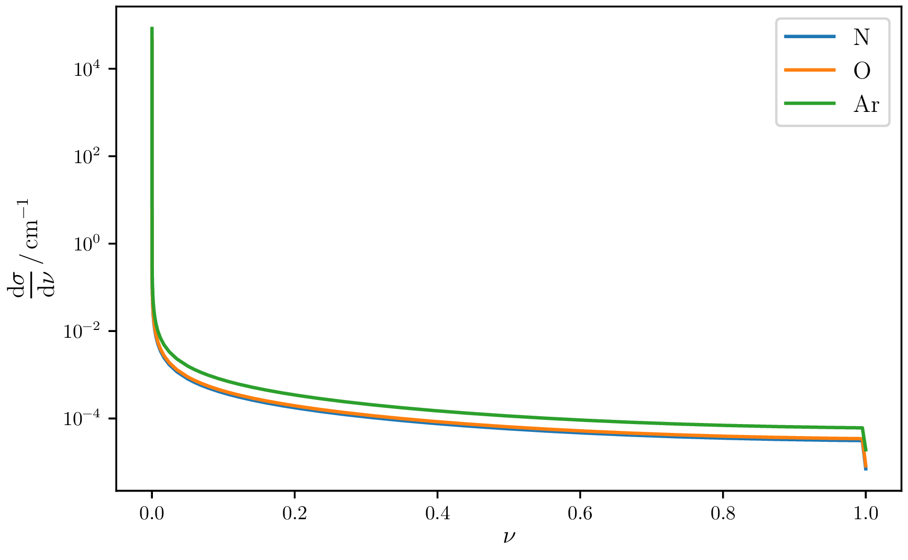
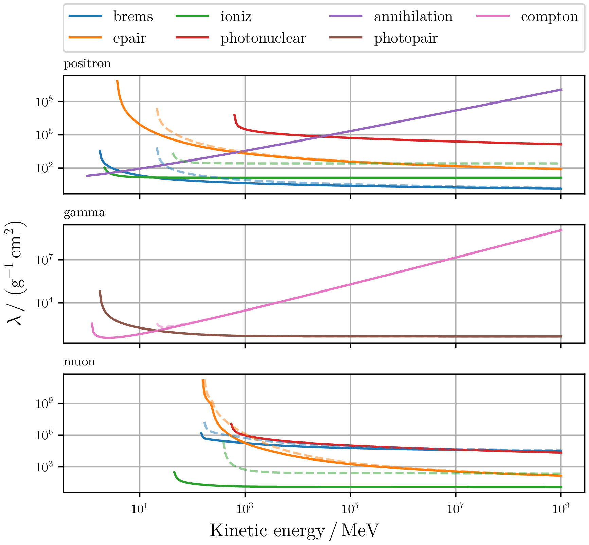
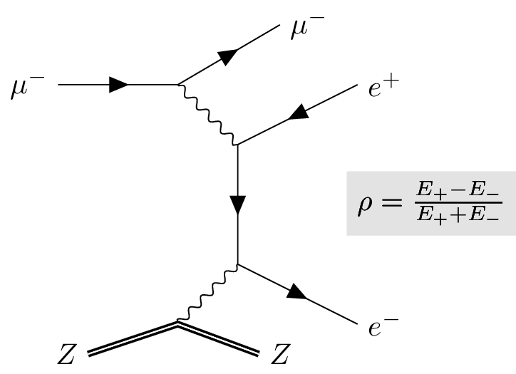

First electromagnetic interaction model in CORSIKA8 using the Monte Carlo simulation tool PROPOSAL
Master thesis overview talk
23 June 2021
Measurements of astrophysical sources
Direct detection of observables is not possible, therefore ground-based or extraterrestrial indirect measurement processes are used. In order to extract physical measurements from the measured observables, it is necessary to calibrate the system using data where the truth is known (for example, simulation data).

Measurement dilemma and opportunities
Astrophysical sources accelerate different kinds of particles like nuclei, gammas or leptons. On their way to the detector they can be deflected by magnetic fields, interact with dust or gas clouds or be absorbed or deflected by compact objects. Detections can be performed extraterrestrially in a limited energy range and otherwise ground-based.

Atmospheric cascades
If a particle hits the atmosphere, it partitioned its energy due particle losses into the production of secondary particles. Depending on the initial particle type, the particle showers develop characteristic components of varying intensity.
The shower regions can be subdivided into three different components, the electromagnetic (em), muonic and hadronic component. Shown are a proton-induced and an electron-induced shower with an initial particle energy of $1\,\mathrm{PeV}$ using the most complete model currently available in CORSIKA8. The most obvious difference is the number of hadrons and muons produced. For electron or gamma induced showers, the production of muons or hadronic particles is a subdominant process. It is currently missing in the em description and will be added in the near future. Due to the higher radiation losses for em processes, these are more compact and have a smaller deviation from the shower core (lateral distribution).
-
$e/\gamma$ electromagnetic
Electrons and photons deposit their loss energy dominantly into the production of further photons, electrons and positrons. Their radiation length is much smaller than that of muons, so their range is much smaller. High-energy particles usually do not have any significant deviation from the shower axis.
For higher energies it can be simplified as a sequence of bremsstrahlung and pair production losses before the energy is no longer sufficient to produce further particles.
-
$\mu$ muonic
In hadronic as well as electromagnetic processes muons or particles can be produced which decay to muons. The dominant process is the production by hadronic interactions of charged pions which decays by a leptonic decay into a muon. \begin{equation} \pi^+ \rightarrow \mu^+ + \nu_\mu \end{equation} There is also a chance to produce muons via electromagnetic processes like \begin{equation} e^- + \ce{Z} \rightarrow e^- + \ce{Z} + \mu^+ + \mu^- \end{equation} or inelastic interactions with the nucleus.
-
$K/\pi$ hadronic
If a nucleus interacts it produces a hughe number of mesons. The heavier mesons like the Kaon can decay in lighter mesons like the pion. \begin{equation} K^+ \rightarrow \pi^+ + \pi^0 \end{equation} The neutral pions subsequently generate an electromagnetic component. \begin{equation} \pi^0 \rightarrow \gamma +\gamma \end{equation}
Electromagnetic cascades
Tasks which has to be solved to produce an electromagnetic cascade
-
How does the particle trajectory looks like?
Split into sub trajectories, describe physics on the sub trajectories
-
Which particles are produced along the trajectory?
Produce secondaries caused by the primary losses, above a certain energy threshold
How can PROPOSAL help to generate em cascades?
Initially the development was not started with the idea to be an electromagnetic interaction model in CORSIKA. In the course of the development it offers the possibility to make the interactions of leptonic and photonic interactions available for a variety of users.
Development flow
-
Initial idea (2004)
An accurate simulation of the propagation of muons through large volumes of matter is needed for the analysis of data produced by muon/neutrino underground experiments.
-
Library solving sub-tasks of em cascade simulation (2021)
Modularisation of the calculations, so that it can be utilized by external libraries. Use PROPOSAL to calculate the electromagnetic interactions and losses in the CORSIKA8 simulation.
Installation process
For the use of a library in different application cases it is advantageous to use a package manager. For this purpose, the possibility to create packages that can be used by other users was etablished. Through versioning, functions can be added more transparently and simulation situations can be recreated.

Cross-section divergence problem
Interactions in PROPOSAL are usually calculated on the basis of differential cross-sections. The rates can be calculated by integration over the physical kinematic limits. Some of them diverge so that a threshold is necessary below which losses aren't handled continuously.
The available effective cross sections in PROPOSAL are usually differentially parameterised in the relative energy loss $\nu$. Rates are calculated by integration over the parametrisation kinematic limits. To avoid multiple integrations, two dimensional interpolants can be used in $(\nu, E)$.
\begin{equation} \sigma_\mathrm{tot} = \int_{\nu_{\min}}^{\nu_{\max}} \frac{\mathrm{d}\sigma(E)}{\mathrm{d} \nu} \, \mathrm{d}\nu \end{equation}Some of the electromagnetic cross sections diverge for small relative energy transfers $\nu \rightarrow \nu_{\min}$. An example is the bremsstrahlung radiation cross section which is shown below.
Purposefully, a relative loss cut $\nu_\mathrm{cut}(E)$ is introduced below which processes are no longer considered stochastically. However, they can still be considered as continuous energy loss.
Continuous losses
A particle which travels a distance through a media losses energy due different interaction processes. Below an energy threshold, it is not feasible to stochastically resolve all losses. Instead, they are combined into an averaged ensemble.
To calculate the energy loss that a particle has after it travels a distance from the point $x_i$ to the point $x_j$, the trajectory is divided into infinitesimal small pieces.
If the average energy loss per infinitesimal distance is known, the energy loss can be calculated based on the knowledge of the particle energy along the trajectory. The figure shows the energy loss for the three types of particles when they lose their energy exclusively via the continuous process.

The continuous processes are combined into one continuous loss, as no statement can be made about which process the loss occurred.
\begin{equation} \sum_\mathrm{inter} \frac{\mathrm{d}E_\mathrm{inter}}{\mathrm{d}X}(E) = -f(E) \end{equation}By searching for the upper integration limit, for a known density profile $\rho(x)$ both the energy after a distance covered and the distance after a given energy loss can be determined.
\begin{equation} \int^{x_\mathrm{i}}_{x_\mathrm{f}} \rho(x) \mathrm{d}x = \int^{E_\mathrm{i}}_{E_\mathrm{f}} \frac{1}{f(E)} \, \mathrm{d}E \end{equation}Mean free path length
By choosing the energy from which losses are treated stochastically, the rate for the interactions changes. This leads to different step sizes and influences the runtime of the program in addition to the lower limit of the detectable spectrum.
For different stochastic energy cuts ($1\,\mathrm{MeV}$ solid lines and $20\,\mathrm{MeV}$ dashed line), the size of step length and continuous energy loss changes.
Stacked rates
What is the size and the interaction type of the stochastic loss to the sampled location?
Sample process
-
rates per target and interaction
Calculates and store the interaction rates for each possible target. The interaction are represent by different colors and the targets by different opacities.
-
sample from overall rate
Build the overall rate and sample an interaction rate by the use of only one random number. In the picture below $0.42 \cdot \texttt{overall_rate}.$ -
search target and interaction
Check which intervall of the interaction target tuple correspond to the sampled rate. -
determine loss to rate
Search the upper limit for the choosen tuple. \begin{equation} \sigma_\text{loss} = \int_{\nu_\mathrm{cut}}^{\nu_\mathrm{loss}} \frac{\mathrm{d}\sigma(E)}{\mathrm{d}\nu} \, \mathrm{d} \nu \end{equation}
Sample electron loss
Example determination of the magnitude of a stochastic electron loss at an energy of $5\,\mathrm{TeV}$ and a stochastic threshold of $10\,\mathrm{GeV}$.
Based on the knowledge of the particle energy and the loss types as well as the loss energy, the corresponding generated secondary particles can be produced at an arbitrary time point.
How is it all connected?
The physical problems solved on the basis of different modules. Different problems can be solved by combining them. On the basis of the same modules on which the electromagnetic shower calculations for CORSIKA8 are based, the current PROPSOAL propagator can be assembled.
One propagation step of the propagation loop performed by the PROPOSAL propagator approximates the task area covered by the em module in CORSIKA. For this purpose, based on the particle condition $q_i$ the maximum energy at which a decay $E_\mathrm{d}$, the next stochastic interaction $E_\mathrm{i}$, or a condition $E_\mathrm{c}$ is fullfilled, is calculated. A condition can be for example the maximum continuous energy loss or a maximum distance. The particle is moved to the position of maximum energy and if the condition or decay energy is maximum, the propagator terminates. After that it is possible to calculate the decay spectrum of the lepton if it is of interest. Based on the state before $q_i$ and after the continuous loss $q_\mathrm{CL}$ the effect of elastic Coulomb scattering processes can be taken into account as a correction.
Subsequently, the interaction rates $R$ are calculated and an interaction and a loss are sampled. The directional deflection due to the interaction can be taken into account on the state of the primary particle after the stochastic loss $q_\mathrm{Inter}$ as a direction correction. The state $q_\mathrm{inter}$ forms the intial state $q_{i+1}$ of the next propagation step. At any time the secondary particles $q_\mathrm{secondaries}$ of a state $q_\mathrm{inter}$ can be calculated.
Sampling next stochastic interaction point
The location where the next stoachstic interaction takes place is sampled. On the one hand the continuous loss can be considered directly. On the other hand it can be assumed that the rate is constant and the interaction can be rejected afterwards with a probability.
-
PROPOSAL approach
If the trajectory is parameterised by the energy $E$ , the next interaction point can be calculated taking into account the energy losses per path element $f(E)$. The step size corresponds to that of the stochastic processes.
\begin{equation} \int_{E_\mathrm{i}}^{E_\mathrm{f}} \frac{\sigma(E)}{f(E)} \, \mathrm{d}E =\log(\xi) \end{equation}To calculate the distance from the energy $E_\mathrm{f}$ of the next stochastic loss, the upper limit of the track integral see equation \ref{eq:track_integral} must be determined.
-
CORSIKA approach
If the trajectory is parameterised by the distance $x$, the sum of the mean free path lengths $\lambda = \sum_i \lambda_i$ are used to sample the next stochastic interaction point.
\begin{equation} \Pr ( \min \{ X_1, \ldots X_n \} > x) = \lambda^{-1} \exp \left( \frac{x}{\lambda} \right) \end{equation}It is taken into account that the mean free path becomes larger due to continuous losses by rejecting the loss with the probability:
\begin{equation} p_\mathrm{acc} ( E, E_\mathrm{i}) = \frac{\lambda(E)}{\lambda(E_i)} \end{equation}This leads to the fact that the stochastic step size is smaller than necessary to describe the process.
Stochastic interaction acceptance
Acceptance probability of a stochastic loss for different stochastic energy thresholds. Shown is a stochastic loss in the distance of the mean free path (solid line), and a step length where due the continuous loss 1, 10 and 20 percent of the primary energy is lost (dashed lines from top to bottom).
For energies going towards the stochastic energy threshold, the acceptance probability decreases, since the change of the mean free path is large. The allowable step size through the maximum continuous loss is the dominant effect at low particle energies, suppressing the effect.
Continuous step length limitations
For low energies the step size is limited by the limit of the maximum continuous energy loss (dashed line) of 10 %. This leads to the fact that the step size is much smaller than necessary for the description of the stochastic process (solid line).
Secondaries production
The calculation of the secondary products is possible at any time from the state before the stochastic loss and the properties of the stochastic loss.
To calculate the energy distribution of the generated particles, the asymmetry $\rho$ between the energy distribution of the secondary products is sampled.
\begin{equation} \int_{\rho_{\min}}^{\rho_{\max}} \frac{\mathrm{d}\sigma(E, \nu)}{\mathrm{d} \rho \cdot \mathrm{d} \nu} \, \mathrm{d}\rho \label{eq:track_integral} \end{equation}For this purpose, an integration of the double differential cross section must be performed. This is a runtime-intensive process.
Study of secondaries products
For each bincenter, $10^5$ stochastic losses are performed with a lower energy threshold of $1\,\mathrm{MeV}$. For the stochastic losses the corresponding secondary particles are produced and the averaged energy of the secondary products is plotted.
Gamma produced secondaries:
Electron produced secondaries
For particle energies below $10^5$ for electrons and for $10^2\,\mathrm{MeV}$ for photons exists a charge excess between the deposited energy in electrons and positrons. The secondary products for the photonuclear interactions cannot be taken into account at present, but they are only a subdominant component for electrons.
Lateral distribution
Several processes exist that have a contribution on lateral shower widening. Their influence depends mainly on the observed energy range.
-
Multiple scattering
Deflection caused by elastic Coulomb interactions traveling a certain distance.
-
Stochastic deflection
Change of direction of the particle which undergoes a stochastic interaction.
-
Secondaries angular
Direction of the secondary particles produced during the interaction.
Multiple scattering
A charged particle passing a distance $x$ undergoes an ensemble of elastic Coulomb scattering. The charged particle is deflected from its original trajectory and has a different final direction after the continuous step.
The deflections are sampled using a Gaussian distribution determined by the characteristic width $\theta_0$. When calculating the deflection angle, the energy loss along the trajectory can be taken into account. This leads to systematically larger deflection angles.
-
Highland approximation
\begin{equation} \theta_0 = \frac{13.6 \, \mathrm{MeV}}{\beta c p } \sqrt{\frac{X}{X_0}} \left[ 1+ 0.088 \log_{10} \left( \frac{X}{X_0} \right) \right] \end{equation} -
Highland integral
\begin{equation} \theta_0 = 13.6 \, \mathrm{MeV} \sqrt{\frac{X}{X_0}} \left[ 1+ 0.088 \log_{10} \left( \frac{X}{X_0} \right) \right] \sqrt{ \int^{E^\mathrm{f}}_{E_\mathrm{i}} \mathrm{d} E \frac{E^2}{p^4} \frac{1}{-f(E) X_0}} \end{equation}
Five different initial electron energies were determined. For an energy cut of 10 MeV the deflection angles were determined in relation to the continuous losses.
Stochastic deflection
Occurs a large losses there is a realistic chance that the primary particle is deflected due to the interaction. For this purpose, the infrastructure was created to realize stochastic deflections in this work and parameterisations were added in the work of P. Gutjahr.
To study the influence of stochastic deflections, $10^4$ electron tracks with an initial energy of $1\,\mathrm{GeV}$ are produced. The deflections were simulated and the losses are projected onto an observation plane on the earth's surface. For particles close to the shower cores, the stochastic deflection provides a significant contribution to the Coulomb scattering processes.
Secondaries angular
The secondary particles that are created in a stochastic loss have a different angle than the particle that experiences the loss. For low-energy particles whose range is limited, it is not necessary to sample the exact deflection angle if this is computationally intensive.
Shown are the emition angular of the electron sampled from a pair production of a photon. Compared are the sampled angular from the Tsai-parametrization and the approximation $\Phi = m_\mathrm{e} / E_\gamma$ mentioned in the EGS manual.
Even if they do not match for low energy, there are processes for low energetic electrons which influence the directional deflections more significantly, such as multiple scattering or magnetic field deflections.
First electromagnetic shower
The first attempts to create an electromagnetic shower all failed. This is due to a discontinuity in the interpolated functions which produce strong oscillations. These have so far been a subdominant effect, since the choice of the stochastic energy cut changes the relative relationship of the continuous losses of the different interaction types to each other.
Shown are the relative deviations of the old interpolation method in solid lines and the new dashed lines to the integrated values. In the case that an energy cut is chosen, where the oscillations make a significant contribution in solving the track integral, this leads to the generation of negative displacements. These are unphysical and must be avoided.
Cubic interpolation Have a look at GitHub
Using cubic splines ensure that the function is differentiable at least once on the definition interval. The interpolation is restricted to an interval on which the function is strictly monotonic. The nodes are distributed according to a known invertible distribution, so no interval nesting needs to be used.
By approximating the lower interpolation limit avoids non-physical oscillations where no rate exists, by the cost of a small energy uncertainty of the lower intervall region.
To avoid interval nesting, points of support are distributed along a node function.
\begin{equation} f(x) = f(T^{-1}(t)) \end{equation}For functions that are to be interpolated over several orders of magnitude, it is useful to use exponentially distributed substitutions. In general, any other distribution can be realized as long as it is invertible.
\begin{equation} T_{\exp}(x) = \frac{\log(x/\mathrm{low} +1) - \log(2)}{\mathrm{stepsize}} \end{equation}Cut dependence
The time it takes to create a shower depends on the stochastic energy threshold. This has a direct influence on the step size and the number of secondary particles produced.
Averaged runtime for $100\,\mathrm{GeV}$ electron induced cascades for different stochastic with same particle threshold from $20\,\mathrm{MeV}$
Listed are the runtimes to simulate a shower with different stochastic energy cuts. Higher stochastic thresholds cause larger mean free paths, leading to larger step sizes for the energy ranges where the stochastic step size is smaller than the maximum continuous loss. Furthermore, fewer secondary particles are produced which are instantaneously removed from the particle threshold.
Spectrum of an $10\,\mathrm{TeV}$ electron initiated em shower reaching an observation plane of $4.1\,\mathrm{km}$.
The choice of the stochastic energy cut does not seem to have any effect on the shape of the spectrum. There are fluctuations in the spectrum due to the variation of the $X_{\max}$ distribution, which is very sensitive to where the first large energy transfer occurs.
Longitudinal profile
For study purposes, $50$ inital $10\,\mathrm{TeV}$ electron showers were simulated. The $68\,\%$-quantiles are plotted as the error bar and not the error on the mean value. The lateral profiles can be used to check whether the production mechanisms and the continuous losses of the particles look reasonable.
Charge excess
Based on the lateral profile, physical measurements can be extracted, such as the charge excess.
$X_{\max}$ distribution
By varying the initial particle energy, the $X_{\max}$ distribution can be fitted. This is a measurement which is relevant for a variety of experiments.

Lateral profile
By slicing along an observation plane, the deflection processes of the particles can be studied.
Energy deposition
The radius in which $90\,\%$ of the particle energy is deposited is known as the Molière radius.
Modules based on em calculations
Radio signal
The event was kindly produced by N. Karasthathis.